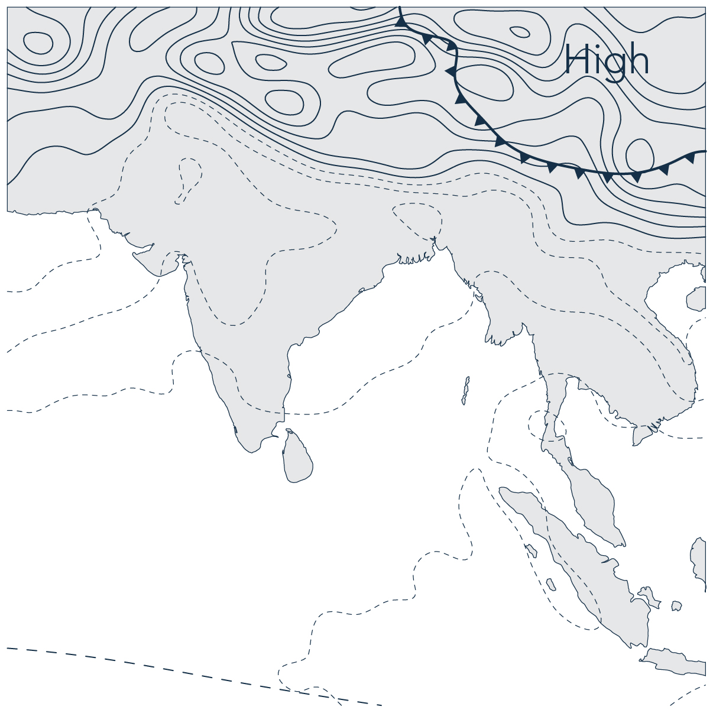

Monsoonal Multiplicities
Never is a plateau separable from the cows that populate it, which are also the clouds in the sky.1
Monsoonal Multiplicities is an exhibition of work arising from a five-year engagement with the monsoon in India, Bangladesh, London and Myanmar by the European Research Council funded project, Monsoon Assemblages. It offers visitors a virtual experience of the monsoon by following stories of entangled beings, energies, infrastructures, life-worlds, matters, technologies and knowledge practices and their mobilisation by colonial and neo-colonial agendas. The stories are organised under five themes – framings, infrastructures, interspecies interlocutors, matters and urban assemblages, that serve as cuts through monsoonal encounters. The website has been designed to enable visitors to navigate rhizomatically through the stories and themes – to scroll down, leap across, return, zoom in, pause, or in other ways interact with their content without ever having to return to a home page. Navigation becomes a way of constructing circulations and cross-cutting relations, providing visitors a virtual experience of the monsoon in all its multiplicity.
In March 2021 Monsoon Assemblages will host a programme of online events, a walking tour and an artists’ residency in London to coincide with the launch of the exhibition. These events will open the work of Monsoon Assemblages to critical debate and invite audiences to think through its implications for spatial, ethnographic and artistic research practice at a time of ecocide, unstable weather patterns, viral toxicity and violent socio-political hegemony
Monsoonal Multiplicities Opening
Online event: Booking Request
March 04, 13.00-14.00 UTC (08.00-09.00 EST, 18.30-
19.30 IST)
Speakers:
Sunil Amrith
Dilip da Cunha
Chair: Lindsay Bremner
Practicing Architecture Otherwise
Online Panel Discussion: Booking Request
March 11, 13.00-15.00 UTC (08.00-10.00 EST, 18.30-
20.30 IST)
Speakers:
Alison Killing, killingarchitects
Alfredo Ramirez, GroundLab
Architects Climate Action Network UK
Jonathan Cane Rufus Maculuve and Ben Pollock,
Sounding the Monsoon
Chair: Lindsay Bremner
East India Company Walking Tour
Online Walking Tour: Booking Request
March 13, 13.00-14.00 UTC (08.00-09.00 EST, 18.30-
20.30 IST) Booking: https://www.eventbrite.co.uk/e/
monsoonal-multiplicities-tickets-136088491341
Tour by: Leila Redpath
In this one-hour Virtual Tour, Leila Redpath will give participants a flavour of how the East India Company grew from a modest fleet of spice traders in 1600 to become the most powerful multinational corporation the world has ever known. But what ever happened to it? Why is it so hidden? And what is its legacy on the ground today? The tour will convey both the ingenuity and ruthlessness of the EIC and the ways it shaped our world today.
How is London a Monsoonal City?
Online Openhouse Artists Residency Workshop: Booking Request
March 18, 13.00-15.00 UTC (09.00-11.00 EST, 18.30-
20.30 IST)
Participants:
Feedback Theatre (Nina Feldman, Debora Mina, Mita
Pujara)
Hydar Dewachi
Naiza Khan
Sheila Ghelani
Chair: Corinna Dean
Cultures of Climate Change
Online workshop: Booking Request
March 25, 13.00-15.00 UTC (09.00-11.00 EST, 18.30-20.30 IST)
Collaborators:
Bengal Institute of Architecture Landscapes and Settlements , Dhaka
Blue Temple, Yangon
Care Earth Trust, Chennai
Research Initiatives Bangladesh
Urban Design Collective, Chennai
Chairs: Lindsay Bremner and Beth Cullen
Monsoonal Multiplicities Closure
Online event: Booking Request
March 29 13.00-14.00 UTC +1 (08.00-09.00 EST, 17.30-
18.30 IST)
Speaker: Harry Charrington
Chair: Lindsay Bremner
During March 2021, the Monsoonal Multiplicities virtual exhibition will serve as a residency space for three artists to apply their research practices to the question ‘How is London a Monsoonal City?’ The process will be documented by the artists themselves and a filmmaker and result in four short videos and posts for the Monsoon Assemblages Instagram feed, https://www. instagram.com/monass_2016/.
Artists:
Feedback Theatre
Naiza Khan
Sheila Ghelani
Filmmaker:
Hydar Dewachi
Anemometer
An anemometer is an instrument for measuring wind speed and direction. The term comes from the Greek word anemos, meaning wind.
Anti-Cyclone
An anti-cyclone is the opposite of a cyclone. It is a large scale circulation of winds rotating around a central region of high as opposed to low atmospheric pressure.

Argo
Argo is a collaborative international programme that uses drifting floats to record oceanic temperature, salinity, currents and bio-optical properties at many depths. It has been operational since the early 2000s and is now the major source of information on the climatic state of the word’s oceans.

Atmospheric aerosols
Atmospheric aerosols are fine solid particles or liquid droplets suspended in the air. They can alter the spatio-temporal pattern of the monsoon by scattering or absorbing solar radiation and by changing cloud properties.

Atmospheric circulation
Atmospheric circulation is the large scale circulation of air masses around the earth driven by the sun’s energy and the laws of thermodynamics. Large scale atmospheric circulation cells shift towards the poles in warmer periods and towards the equator in cooler ones

Atmospheric gravity wave
Atmospheric gravity waves are waves that move vertically through the air and transfer momentum from the troposphere to the stratosphere and mesosphere. They are generated in the troposphere by thunderstorms or by airflow over mountains.

Atmospheric River
An atmospheric river is a long, narrow ribbon of air containing high levels of water vapour that flows through the atmosphere like a river. They are typically located ahead of cold fronts fed by warm, tropical maritime winds in the Indian and Pacific oceans.

Automatic Weather Station
An automatic weather station is an automatic version of a traditional weather station and typically contains a thermometer, an anemometer, a wind vane, a hygrometer and a barometer.

Barometer
A barometer is an instrument used to measure atmospheric pressure.
Barometric Pressure
Barometric pressure, also known as atmospheric pressure, is the pressure of the atmosphere bearing down on earth at a specific point. It is the result of the gravitational attraction of the earth on the atmosphere and is modified by the earth’s rotation, wind velocity and air temperature and composition.

Convection
Convection is the transfer of heat in a liquid or a gas that occurs when warmer particles move and take the place of cooler particles, creating a current or flow.

Coriolis Effect
The Coriolis effect is a consequence of the earth’s rotation that causes a body in motion to be deflected to the right in northern hemisphere and to the left in the southern hemisphere. It affects winds and ocean currents.

Cyclone
A cyclone is a large scale circulation of winds rotating around a central region of low atmospheric pressure. Cyclones swirl counter-clockwise in the northern hemisphere and clockwise in the southern hemisphere. The word cyclone comes from the Greek kyklon, meaning ‘whirling around’ and also refers to the coil of a snake. Hurricanes and typhoons are other words for these phenomena.

Data Buoy
A data buoy is a floating weather station used to monitor and collect atmospheric and oceanographic data.

Depression
A depression in the atmosphere is an area of low pressure caused by divergent winds in the upper atmosphere. These cause air to rise and drag in air from around it, at times developing into cyclones.
Dew Point
Dew point is the temperature to which air must be cooled to become saturated with water vapour. When cooled further, the water vapour will condense to form liquid water. It is a useful measure of relative humidity.

Ekman Spiral
An Ekman spiral refers to the upwelling or downwelling of the ocean in a water column caused by by the action of wind drag on the surface of the ocean and the Coriolis effect. Ekman suction refers to upwelling and Ekman pumping refers to downwelling.

El Niño
El Niño is a large-scale ocean-atmospheric climate interaction linked to the warming of sea surface temperatures that occurs periodically across the central and east-central equatorial Pacific. It negatively impacts southwest monsoon rainfall in India.

Gyre
A gyre is a large system of circular ocean currents formed by wind circulation patterns and the Coriolis force. In the southern Indian Ocean, a large gyre flows from east to west between Australia and Madagascar, while northern hemisphere gyres in the Bay of Bengal and the Arabian Sea flow from west to east.

Hydrological Cycle
The hydrological cycle is a way of understanding the continuous movement of water under, on and above the surface of the earth.

Hygrometer
A hygrometer is an instrument for measuring humidity. There are many different kinds of hygrometers, but all rely on the calibration of other measurements.

Indian Ocean Dipole
The Indian Ocean Dipole is also known as the Indian Ocean El Niño. It is a periodic, irregular oscillation of sea surface temperatures between the western and eastern parts of the Indian Ocean. In its positive phase, the western Indian Ocean becomes warmer than the eastern Indian Ocean, in its negative phase, the opposite occurs. It affects climate around the Indian Ocean from Australia to Southern Africa.

Indonesian Through Flow
The Indonesian Throughflow is an oceanic current that transports warm relatively fresh water from the Pacific to the Indian Ocean and serves as the upper branch of the global heat conveyor belt. It is advected towards Africa within the Indian South Equatorial Current.

Intertropical Convergence Zone (ITCZ)
The Intertropical Convergence Zone is where the northeast and southeast trade winds converge. It is also known as the equatorial low as it encircles the earth near the thermal equator, though it moves seasonally northwards and southwards. It was known to sailors as the doldrums because of its windless weather.

Isobar
An isobar is a line on a synoptic chart connecting points having the same atmospheric pressure at any point in time.
Jet Stream
Jet streams are fast-flowing, relatively narrow Rossby waves that move from west to east between the earth’s major air cells at the level of the tropopause. They include polar jets, subtropical jets and the tropical easterly jet that occurs during the summer monsoon over India and Africa.

Kelvin Wave
A Kelvin wave is a wave in the ocean or the atmosphere that balances the earth’s Coriolis force against a topographic boundary such as a coastline. Equatorial Kelvin waves balance the Coriolis force in the northern hemisphere against its southern counterpart, propagating eastwards.

Land-Sea Breeze
A land-sea breeze is a flow of air between land and sea owing to the fact that land heats up and cools off faster than water. During the day, warm air rises above the land and cool air over the water moves in to take its place. During the night, the reverse occurs

La Niña
La Niña is a large-scale ocean-atmospheric climate interaction linked to a cooling of sea-surface temperatures that occurs periodically across the central and east-central equatorial Pacific. It has a warming effect on global temperatures and is associated with above average rains in south Asia. It is the reverse of El Niño.

Madden-julian Oscillation
The Madden-Julian oscillation is a large scale coupling between atmospheric circulation and deep atmospheric convection in the tropics. It travels eastwards through the atmosphere above the warm parts of the Indian and Pacific oceans and manifests as anomalous rainfall. Its cycles last between thirty and sixty days.

Mesosphere
The mesosphere is the third layer of the earth’s atmosphere, where temperature decreases with altitude

Milankovitch Cycles
Milankovitch cycles are long term changes in the earth’s orbit shape, tilt and wobble in relation to the sun. They are a strong driver of long term climate change.

Monsoon
The monsoon is a global feature of the earth’s climate. It manifests as a seasonal reversing of winds accompanied by rain. It is understood to be a response by the coupled atmosphere-land-ocean-creosphere-biosphere system to annual variations of solar radiation in tropical regions.

Monsoon Intra-seasonal Oscillation
Monsoon intra-seasonal oscillations are alternating periods of the south Asian monsoon of heavy and minimal rainfall each lasting for about a month. They follow a northwards pattern from the equator across South Asia.

Monsoon Trough
When the Intertropical Convergence Zone is drawn into and merges with the monsoon, it is known as the monsoon trough. It is where the winds in the northern and southern hemispheres converge within a monsoonal system, shown on maps as a line connecting monsoon low pressure zones.

Northeast Monsoon
The northeast monsoon, otherwise known as the retreating monsoon, occurs when the the ITCZ starts to move southwards and the Indian landmass starts to cool down at the end of summer. High pressure builds up over northern India and a low pressure trough forms over its southeast coast. This pulls cold winds originating in Siberia across the Bay of Bengal in a south-westerly direction.

Onset
Onset is the date on which the southwest monsoon normally arrives on the Kerala coast of India and then proceeds across the country. In some parts of the country, the onset date is being revised in response to the changing climate.

Orographic Lift
Onset is the date on which the southwest monsoon normally arrives on the Kerala coast of India and then proceeds across the country. In some parts of the country, the onset date is being revised in response to the changing climate.

Radiosonde
A radiosonde is a battery powered instrument carried into the atmosphere by a weather balloon that measures atmospheric properties and transmits them by radio to a ground station.

Rain Shadow
A rain shadow is a dry area on the leeward side of a mountain range. Mountains cause rain clouds to rise and shed their rain on their windward sides, causing a shadow of dryness on their leeward sides.

Ridge
A ridge in meteorology is an elongated area of high pressure. It is the opposite of a trough
Rock Cycle
The rock cycle describes the transitions between the earth’s three main rock types – igneous rock, metamorphic rock and sedimentary rock. Each of these are altered when exposed to new conditions, through, for example, uplift or subduction.

Rossby Waves
Rossby waves, also known as planetary waves, such as jet streams, are giant meanders of high altitude winds influenced by the Coriolis force and pressure gradients. They have a major influence on the world’s weather. They also occur as large-scale, low amplitude waves within the world’s ocean basins.

Satellite
Satellites can be natural, when they are known as moons, or artificial objects placed into orbit. The world’s first artificial satellite was launched in 1957 by the Soviet Union. Today there are thousands of satellites in orbit around the earth used for earth observation, weather forecasting, communications and other purposes.
Seismometer
A seismometer is an instrument used to measure ground movements caused by earthquakes, explosions or volcanic eruptions. Together with a timing and a recording device, they form a seismograph.

Seychelles Dome
The Seychelles dome is a shallow thermocline in the southwest Indian Ocean where ocean wave dynamics allow sea surface temperatures to be predicted up to one to two years in advance.

Southern Oscillation
The Southern oscillation is the oceanic component of El Niño and La Niña. It is a cycle of warm and cold sea surface temperature in the tropical central and eastern Pacific Ocean.

Southwest Monsoon
The southwest monsoon is the system of wind and rain that arrives in India at the beginning of June. It is driven by the warming of the Indian subcontinent and Tibetan Plateau as the ITCZ moves northwards in the northern summer. As the land heats up, it pulls warm, moist air from the southwest Indian ocean, which, as it rises, falls over the subcontinent as rain.

Stratosphere
The stratosphere is the layer of the earth’s atmosphere above the troposphere, where temperature increases with height.

Synoptic Chart
A synoptic chart is a weather map that describes the state of the atmosphere at any moment in time. Weather is generally represented as high and low pressure zone and weather fronts.

Tectonic Cycle
The tectonic cycle is the process of continuous construction and destruction of the earth’s crust at plate boundaries, driven by the energy of the earth’s inner core. At divergent plate boundaries, new crust forms when lava cools down, while at convergent plate boundaries, one plate is subducted under another and melts back into the mantle.

Thermometer
A thermometer is an instrument for measuring temperature. Most are closed glass tubes containing alcohol or mercury. Weather thermometers measure the temperature of the air.
Thermocline
The thermocline is the layer in the ocean between warmer mixed water at the surface and cooler deep water below, where temperature changes rapidly with depth. It aligns closely with the pycnocline (increased density) and the halocline (increased salinity).

Third Pole
The Himalayas and the Tibetan Plateau are widely known as the Third Pole because they hold the largest reserve of fresh water outside of polar regions.

Trade Winds
The trade winds are surface air currents that blow from east to west near the equator.

Troposphere
The troposphere is the lowest layer of the earth’s atmosphere where temperature decreases with height. It is the site of all the earth’s weather.

Tropopause
The tropopause is the division between the troposphere and the stratosphere that occurs ten to fifteen kms above the surface of the earth.

Trough
A trough in meteorology is an elongated area of low pressure often associated with weather fronts. It is the opposite of a ridge.

Weather Front
A weather front is the zone of the atmosphere where a warm and a cold air mass clash. The boundary between the two may either be cold, warm or occluded. Cold fronts generally move from west to east, warm fronts move polewards; occluded fronts are when a cold front overtakes a warm front.

Westerlies
Westerlies, otherwise known as anti-trades are winds that blow from the west to the east in latitudes between 30࠷ and 60࠷ north and south. They originate in high pressure areas in latitudes further north or south.
Withdrawal
Withdrawal describes the weakening of monsoon rainfall. In India, it normally begins in September in the north west, and ends in the south east in December.

A number of organisations in Chennai, Dhaka and Yangon provided invaluable support to Monsoon Assemblages during fieldwork and in organising the Cultures of Climate Change Workshop.
Chennai
Care Earth TrustEnvironmentalist Foundation of India
Urban Design Collective
Vettiver Collective
Monsoon Assemblages
Harshavardhan Bhat
Lindsay Bremner
John Cook
Beth Cullen
Christina Leigh Geros
Anthony Powis
Website design
Marketing and Publicity
Technical support at virtual events
Charlotte Birch
Evelyn Choy
Bobby Jewell
Georgia Trower
Sam Turner
Institution

Funders

School of Architecture and Cities, University of
Westminster
Monsoon Assemblages is research project funded by the European Research Council (Grant no. 679873). Between 2016-2021 it conducted research into the monsoon in Bangladesh, India, London and Myanmar as an openended gathering of human, non-human and planetary ways of being and knowing.
Website http://monass.org/
Facebook https://www.facebook.com/monassproject/
Twitter https://twitter.com/monass_2016/
Instagram https://www.instagram.com/monass_2016/
1 M. Lazzarato, The Making of the Indebted Man: An Essay on the Neoliberal Condition, J.D. Jordan (trans.), Amsterdam, Semiotext(e), 2012, p. 29.
Hilsa, the national fish of Bangladesh, is entangled with processes of urbanization and industrialization. Construction of dams, barrages, roads, bridges, ports, factories and energy infrastructures impact delta waterworlds. Such anthropogenic activities alter water and sediment flows, intensify nutrient and pollution loads, and disrupt underwater environments. Hilsa are responding in unforeseen and unpredictable ways.

Hilsa and the Monsoon
Known as ilish in Bengali, hilsa are a monsoonal species. They inhabit the entire coastline of the Indian Ocean, but they are most abundant in the upper reaches of the Bay of Bengal. At the apex of the Bay immense monsoonal flows merge with ocean currents and tides creating a unique ecosystem. While hilsa spend most of their life in the Bay they migrate to the rivers of the delta to breed. The rains of the south‐west monsoon act as an ecological trigger, initiating their spawning migration. Hilsa used to migrate to the upper reaches of all the major rivers, but in recent times their range has dramatically reduced. The altered mobilities of the hilsa are an indicator of shifting human-nonhuman relations
“The Ilisha frequents the Bay of Bengal and the large salt watef estuaries of the Ganges, and in the rainy season ascends the largef rivers to spawn. I have seen if as high as Agra and Kanpur, buf … about Calcutta and Dhaka if is in the utmost abundance anf perfection”
------ (Francis BuchananHamilton, 1822: 244).


The Fisher
Fishers from the Meghna River ascribe changing hilsa migration patterns to the inhospitable river environment. The Farakka Barrage, commissioned in 1975 by the Indian government, transformed Bangladesh’s rivers. The barrage reduced the velocity of monsoonal flows leading to siltation and sedimentation downstream, restricting hilsa movements. Fishers are also concerned by illegal sand mining, fuelled by Dhaka’s booming construction industry. Flotillas of sand dredgers vacuum gravel and sand from the river, altering its bathymetry and disturbing fish migration routes. In response to changing hilsa movements, fishers are forced deeper into the turbulent Bay of Bengal.

“The river has changed;
the difference is like day and night.
When we were children the flow was much higher than at this time”
------ Hilsa Fisher, Chandpur

Huge flotillas of sand dredgers proliferate along the Meghna River just below Dhaka. Dredging increases turbidity and underwater noise, disturbs plankton and endangers fish


Fishing the Meghna: Fishers attune themselves to rivers, tides, weather and fish migration. Through embodied practices they gain intimate knowledge of hilsa and their monsoonal environments.
The Scientist
In recent decades, rapid urbanization and the increased purchasing power of the urban middle class has led to greater fish consumption. Increased demand for the “queen of fish” resulted in unsustainable fishing practices with hilsa numbers declining from the 1970s onwards, reaching record lows in the early 2000s. Alarmed by diminishing numbers and changes to migration patterns, scientists mobilised to conserve the species. To curb unsustainable fishing, and regulate supply to urban markets, scientists developed annual ban periods to “save mother hilsa”.


BFRI Hilsa Research: Bangladeshi scientists involved in hilsa research spend hours, days and weeks on boats, often working alongside traditional fishers, netting, weighing, examining and observing fish.
The strict ban period is March to April. We say, now it’s your turn to go back to the ocean. Go peacefully, without interruption, without problem
------ Fisheries researcher, Dhaka


Located at Chandpur, at the confluence of the Padma and Meghna rivers, the Bangladesh Fisheries Research Institute (BFRI) Riverine Station is at the forefront of hilsa research.
The Cook
Hilsa is cooked in a myriad of ways, but knowing how to buy hilsa is an essential part of the cooking process. Not all hilsa are the same, river hilsa are tastier than marine hilsa. The fish gain fat and protein and take on the taste of the river as they move upstream; the further they travel the tastier they become. As their taste peaks at the height of the rains, for many, hilsa is the taste of monsoon season. Their taste varies from river to river. Hilsa from the river Padma, are thought to be the tastiest due to the characteristics of the river water. However, the taste of hilsa is changing. Infrastructural interventions alter river ecologies, affecting the taste, smell and texture of fish, which is sensed by those who consume them.
When you go to the market, the first thing you learn is how to spot a Padma from a Meghna hilsa. These are things you learn almost through osmosis if you are born here
------ Amateur cook, Khulna
The Activist
Hilsa can no longer be found in the Buriganga River, one of the most polluted rivers in the world. Its waters are a glossy blue-black, covered with rampant islands of water hyacinth which feed on contaminants. The river carries an all-pervasive stench from effluents spewed from tanneries, garment factories, cement plants and fertiliser manufacturers along its banks. The flushing effects of the monsoon carries pollutants downstream, affecting fish and people who depend on them. Environmental activists believe pollution is changing hilsa movements. Hilsa have a highly developed olfactory organ, making them sensitive to smell and taste. Pollutants may impact their olfactory memory and influence migration routes.
Hilsa are extremely sensitive ... They can smell hydrogen sulphide, that rotten egg smell, which means they never come to Buriganga or Dhaka city rivers anymore
------ Environmental activist, Dhaka
Human-hilsa Entanglements
Following the hilsa highlights the multiplicity of ways in which fish, people, weather, infrastructure, cities and materials are entangled with one another. As a transboundary monsoonal organism, the hilsa is loved across geographies, nationalities, religions, environments and culinary traditions. The decline of this glittering, silver-scaled fish will impact environments and ecologies across the region, irrevocably changing human and nonhuman lifeways in the process.
Mache Bhate Bengali
“Fish and rice make a Bengali”

Earth goddesses, snakes
and the monsoon

Snakes are ectothermic beings; temperature, humidity, cloud cover and precipitation influence their behavior. Snake activity increases during monsoon months and snake bite incidents surge as human-snake encounters intensify. Snakes and nagas, serpent-like beings, are associated with water, rain and fertility across the Indian subcontinent. Snake rituals reveal entanglements between snakes, people, belief systems and the monsoon.
Mariamman, snakes and anthills
Mariamman is a rain goddess, invoked to bring rains to Tamil Nadu. Temples to the goddess are often made around anthills where snakes, particularly cobras, are believed to dwell. Both snakes and anthills are forms of the goddess. Milk is given as ‘cooling’ offerings to snakes, and mounds are adorned with yellow flowers and vermillion. Historically Mariamman was the goddess of smallpox, a seasonal disease that proliferated during the dry and windy month of Aadi, and subsided with monsoon onset. Songs to the goddess compared pox-affliction to snakebites. Mariamman is still immensely popular in Chennai


Manasa, snake charmers
and waterways
Bede are skilled snake catchers in Bangladesh who remove poisonous snakes that infest Bengali villages during monsoon season. Bede lead nomadic lives, moving on boats across the riverine landscape of the Bengal delta. They charm snakes and cure snake bites as they travel. Monsoon season is important for the Bede as this is when snakes are most active and river water is high, allowing easy movement. While charming snakes, they perform rituals and songs to the Bengali snake goddess Manasa. In recent times, rivers have deteriorated and snake populations have declined making Bede nomadic life increasingly challenging.


Naga goddesses, snake pagodas
and mud volcanoes
Snake and naga worship was part of pre-Buddhist animist traditions in Myanmar. A place with lingering associations to naga beliefs are the mud volcanoes of Minbu, known as Naga Pywet Taung, or ‘mountain where the naga breathes’. Worshippers pour milk libations into the bubbling mud pools and give offerings to goddess Naga Mae Daw. Minbu is located near the Myanmar oil fields of Yenangyaung. They provide tangible connections to the treasures of the earth that nagas are rumoured to guard. Although nagas dwell in the underworld, they are also believed to have power over wind and rain.


Human-snake entanglements
Snake rituals and associated mythologies embody intimate connections between humans, snakes, weather and environment that have emerged over time. These practices are not just symbolic, but maintain ties between humans, nonhumans and their earthly ecologies. In recent years there has been a significant decline in snake populations throughout the Indian subcontinent and around the globe. South Asia is where most urban growth is expected to occur in coming decades, with further consequences for nonhuman species. Snakes are particularly at risk and although rituals offer ways of ‘making kin’ with snakes, they may not be sufficient to ensure their future survival.


Matters and Matterings
Introduction
Year after year, as they sweep across the Indian terrain, the southwest and northeast monsoons act as architects of seasonal change. Like the monsoon itself, these changes are both material and social. A project of extremes, monsoonal heat and rain produce matter, labour, exploitation and resistance. Salt, one of monsoonal India’s oldest and most reliable resources, is one such material and social practice. Whether found in a geologic deposit or harvested as a seasonal fruit of the monsoonal sun, the need for salt, an indispensable ingredient of life, gave rise to colonial conquest and heralded the call to battle for independence.

Write Caption: Sed ut perspiciatis unde omnis iste natus error sit voluptatem accusantium doloremque laudantium, totam rem aperiam, eaque ipsa quae ab illo inventore veritatis et
Salt, a monsoonal material
The seasonal passage of the southwest and northeast monsoons determines both the timeline and the bounty of India’s salt economy as it splits the arc of the sun’s annual march between the east and west coasts of the subcontinent. Tuned to the rhythms of the monsoons, the extraction of salt is aided by dry monsoon winds and their magnification by the pre- and post-monsoon sun. Today, India produces the third largest amount of salt in the world, an exponential growth since Independence in 1947.
Write Caption: Sed ut perspiciatis unde omnis iste natus error sit voluptatem accusantium doloremque laudantium, totam rem aperiam, eaque ipsa quae ab illo inventore veritatis et
Exploiting salt
In the wake of victory at the Battle of Plassey in 1757, the English East Indian Company (EEIC) gained control of the salt works near Kolkata. Two years later they imposed the first official Salt Tax on the works, doubling land rent and levying a transport tax on manufacturers and traders. After the Indian Rebellion a century later, the British Indian Government formalised the legal and physical infrastructures of salt management initiated by the EEIC with passing of the Salt Act of 1882.


Write Caption: Sed ut perspiciatis unde omnis iste natus error sit voluptatem accusantium doloremque laudantium, totam rem aperiam, eaque ipsa quae ab illo inventore veritatis et
Write Caption: Sed ut perspiciatis unde omnis iste natus error sit voluptatem accusantium doloremque laudantium, totam rem aperiam, eaque ipsa quae ab illo inventore veritatis et
Isolating monsoons
The government monopoly of India’s salt trade was institutionalised by the construction of official salt depots and monitored transportation routes that impeded the rise of rogue producers and distributors. To reduce occurrence of illegal salt production and smuggling between districts, the British constructed an Inland Customs Line, otherwise known as the Great Hedge of India, which extended 2,500 miles from the north of Punjab to the western boundary of Orissa, effectively segregating the salt production of the southwest monsoon from that of the northeast.
“[T]he power to imagine has itself been colonised and dominated so that we understand the fundamental human impulse to be one of conflict rather than communal action.”1

Write Caption: Sed ut perspiciatis unde omnis iste natus error sit voluptatem accusantium doloremque laudantium, totam rem aperiam, eaque ipsa quae ab illo inventore veritatis et

In solidarity with the winds
Barring a brief period from 1694 to 1825, the British public viewed salt taxation as a violation of human rights and unfairly levied against low- income populations. Yet, according to the Salt Tax, it was illegal for anyone who was not an authorised British national to collect and produce salt in India. In 1930 Mahatma Gandhi led a small band of Indian nationals from his hometown Ahmedabad to the coastal village of Dandi. Upon reaching the sea, he reached down and scooped a handful of salt from the sand. This was a direct violation of British Law in India and an act that stoked the fires of Independence.

Write Caption: Sed ut perspiciatis unde omnis iste natus error sit voluptatem accusantium doloremque laudantium, totam rem aperiam, eaque ipsa quae ab illo inventore veritatis et
In solidarity with the winds
Barring a brief period from 1694 to 1825, the British public viewed salt taxation as a violation of human rights and unfairly levied against low- income populations. Yet, according to the Salt Tax, it was illegal for anyone who was not an authorised British national to collect and produce salt in India. In 1930 Mahatma Gandhi led a small band of Indian nationals from his hometown Ahmedabad to the coastal village of Dandi. Upon reaching the sea, he reached down and scooped a handful of salt from the sand. This was a direct violation of British Law in India and an act that stoked the fires of Independence.
“What if we approach social movement action not as targeting existing political power but as experimenting with worlds? What if we see social movement action not as addressing existing institutions for redistributing justice but as the creation of alternative forms of existence that reclaim material justice from below? And, what if this becomes possible not when social movements engage in resistance to power but when they experiment with the materiality of life?”2
Write Caption: Sed ut perspiciatis unde omnis iste natus error sit voluptatem accusantium doloremque laudantium, totam rem aperiam, eaque ipsa quae ab illo inventore veritatis et
1 N. Mirzoeff, “Visualizing the Anthropocene”, Public Culture, vol. 26, no. 2, 2014, p. 219.
2 D. Papadopoulos, Experimental Practice: technoscience, alterontologies, and more-than-social movements, Durham NC, Duke University Press, 2018, p. 3.
A city woven from water
Dhaka is in perpetual dialogue with the monsoon through the hydrological cycle, its very existence woven from and enmeshed within fluctuating monsoon seasons.


Terra-aqueous land
Bangladesh is a fluctuating monsoonal terrain. It is almost half covered in water between June and October each year when it receives huge inflows of water and sediment carried from the Himalayas by the Ganges, Brahmaputra and Meghna Rivers. In addition to this, it is impacted by oceanic dynamics that originate in the Bay of Bengal such as tides, reversing currents, cyclones and storm surges that frequently push seawater many kilometres inland and shape coastal ecologies


Write Caption: Sed ut perspiciatis unde omnis iste natus error sit voluptatem accusantium doloremque laudantium, totam rem aperiam, eaque ipsa quae ab illo inventore veritatis et
Char islands
Bangladesh’s sediment heavy rivers frequently braid or shift, creating precarious, nomadic units of land called chars that cannot be mapped, legally owned or recorded in revenue papers because they move around too quickly and too frequently. Chars have historically been occupied by precarious, marginal people, often without official documents. Those who live on them lead perilous, calamitous lives. When the monsoon breaks and the flow of rivers increase each year, their land frequently deserts them, their shelters are devastated, crops are damaged and livestock washed away. As the river recedes, new chars emerge and fierce, at times violent struggles to occupy them, overseen by local strongmen, ensue.


Dhaka
Dhaka lies at the centre of this terra-aqueous monsoonal terrain on the southern edge of a spur of high ground called the Madhupur Tract. This tract of clay floats above the Dupi Tila aquifer, a subterranean reservoir that provides high quality groundwater to the city. Dhaka is bounded by four rivers and criss-crossed by a meshwork of smaller water courses that are seasonally fed by the monsoon. After independence, it expanded northwards along the clay tract, but, more recently growth has been directed westwards, protected by an embankment along the Buriganga River, and eastwards, where it has displaced agricultural lands, lakes and canals and reshaped their hydrological ecologies

Write Caption: Sed ut perspiciatis unde omnis iste natus error sit voluptatem accusantium doloremque laudantium, totam rem aperiam, eaque ipsa quae ab illo inventore veritatis et


Write Caption: Sed ut perspiciatis unde omnis iste natus error sit voluptatem accusantium doloremque laudantium, totam rem aperiam, eaque ipsa quae ab illo inventore veritatis et
Hydrological
infrastructure
Since the late 1980s, Dhaka East has been the target of speculative urban development driven by the powerful real estate sector. It is an area of low floodplains and marshy lands that are inundated during the monsoon. To prepare land for development, land is elevated above predicted flood levels through a process known as sand pumping. Dredgers suction vast quantities of sand from river beds, which is then pumped from barges via steel pipes into the floodplains and marshlands. Dhaka East is this being reimagined and reformed from the fluid fabric of the monsoon via the extraction and redistribution of sand.


Write Caption: Sed ut perspiciatis unde omnis iste natus error sit voluptatem accusantium doloremque laudantium, totam rem aperiam, eaque ipsa quae ab illo inventore veritatis et
Write Caption: Sed ut perspiciatis unde omnis iste natus error sit voluptatem accusantium doloremque laudantium, totam rem aperiam, eaque ipsa quae ab illo inventore veritatis et
Write Caption: Sed ut perspiciatis unde omnis iste natus error sit voluptatem accusantium doloremque laudantium, totam rem aperiam, eaque ipsa quae ab illo inventore veritatis et

Write Caption: Sed ut perspiciatis unde omnis iste natus error sit voluptatem accusantium doloremque laudantium, totam rem aperiam, eaque ipsa quae ab illo inventore veritatis et
Moghul textiles
Under Moghul rule, Dhaka rose from a humble military outpost to a burgeoning metropolis driven largely by the production of textiles. Royal workshops, with their hub in Dhaka, were established to supervise the manufacture of fine muslin cloth for the court of the Emperor. Over time Dhaka weavers became the most famous in India. Dacca muslin, known as mulmul khas or imperial cloth, gained a reputation for its extraordinary qualities, beauty and fineness. These properties were connected to the city’s monsoonal landscape, in which a particular variety of cotton, locally known as photee, was grown. Temperature and humidity, soil ecology and minerals within the river water imparted it with unique qualities. Weaving was timed in accordance with the humidity of the monsoon and the practice of placing shallow vessels of water beneath looms to keep the fabric moist gave rise to the notion that Dacca muslins were woven under water.


Write Caption: Sed ut perspiciatis unde omnis iste natus error sit voluptatem accusantium doloremque laudantium, totam rem aperiam, eaque ipsa quae ab illo inventore veritatis et
Write Caption: Sed ut perspiciatis unde omnis iste natus error sit voluptatem accusantium doloremque laudantium, totam rem aperiam, eaque ipsa quae ab illo inventore veritatis et


Write Caption: Sed ut perspiciatis unde omnis iste natus error sit voluptatem accusantium doloremque laudantium, totam rem aperiam, eaque ipsa quae ab illo inventore veritatis et
Neoliberal textiles
Following independence in 1971, Bangladesh set in place neoliberal policies that saw an exponential growth in the garment industry. Like the Moghul textile industry had been, the hub of this industry is Dhaka, but unlike it, it supplies cheap clothes to the global market. The modern industry is predicated on the exploitation of cheap labour and what Jason Moore called “cheap nature”.1 Garment production is dependent on water for all steps of manufacturing, from washing and dyeing to textile finishing. Most of the water is sourced from the Dupi Tila aquifer, which is being depleted by millions of cubic metres of water each year. The industry also disposes large quantities of contaminated wastewater into Dhaka’s interlinked rivers and canals. This has meant that many of Dhaka’s rivers have been pronounced biologically dead, with implications for life and livelihoods downstream


Write Caption: Sed ut perspiciatis unde omnis iste natus error sit voluptatem accusantium doloremque laudantium, totam rem aperiam, eaque ipsa quae ab illo inventore veritatis et
Write Caption: Sed ut perspiciatis unde omnis iste natus error sit voluptatem accusantium doloremque laudantium, totam rem aperiam, eaque ipsa quae ab illo inventore veritatis et
The garment industry
and real estate
The timeline of the rise of the garment sector in Dhaka corresponds closely with the rise of the real estate sector. In the 1970s there were only five registered property developers in Dhaka; by 2004, there were 250 and there are now more than 1,500 active companies. The close ties between the two sectors are embodied in powerful diversified business groups that consist of textile and spinning mills, dredging companies, cement and steel manufacturers and property development. These clusters use their power and political connections to pull strings and acquire land and capital. Such conglomerates dominate Bangladesh’s economy and drive Dhaka’s expansion.


Amphibious architecture in the
Bengal floodplain
Arcadia Education Project, South Kanarchor.
Architect: Saif Ul Haque, 2016.
On October 14, 2011, I was taken to see a site for a
prospective project for a preschool on the outskirts of
Dhaka city. After an hour’s drive from the city, the site
was pointed out to me. To my surprise, I could not see
any land; rather what I saw was a flooded river bank.
I exclaimed “I don’t see any land!” This, of course, is
a typical reaction of an architect who would expect
to see a piece of land for a prospective project, not
water. I was then assured land would emerge within a
couple of weeks.2
Jol O Jongoler Kabbo, Pubail, Gazipur.
Architect: Khondaker Hasibul Kabir, unknown.
Jol O Jongoler Kabbo, meaning ‘the rhythm of water
and forest’ is a weekend retreat designed by landscape
architect Khondaker Hasibul Kabir in Pubail, Bangladesh.
Its architecture is constructed as part of a social
waterscape and encourages multi-sensory engagement.
The resort conserves wetlands and a patch of forest and
employs the neighbouring community in management and
maintenance. The retreat is a counterpoint to the traumatic
transformation of the landscape taking place around it in
the name of industrialisation and development.


1 J.W. Moore, Capitalism in the Web of Life: Ecology and the Accumulation of Capital , London, Verso, 2015.
2 S. Ul Haque, ‘Being Amphibious in the Bengal Floodplain’, in L. Bremner and J. Cook (eds.), Monsoon [+ other] Grounds, London, Monsoon Assemblages, 2020, p. 137, on the beginnings of his Arcadia Education Project, South Kanarchor, Bangladesh, awarded an Aga Khan Award for Architecture in 2018


Write Caption: Sed ut perspiciatis unde omnis iste natus error sit voluptatem accusantium doloremque laudantium, totam rem aperiam, eaque ipsa quae ab illo inventore veritatis et
Write Caption: Sed ut perspiciatis unde omnis iste natus error sit voluptatem accusantium doloremque laudantium, totam rem aperiam, eaque ipsa quae ab illo inventore veritatis et
Write Caption: Sed ut perspiciatis unde omnis iste natus error sit voluptatem accusantium doloremque laudantium, totam rem aperiam, eaque ipsa quae ab illo inventore veritatis et
Kulyd, khals and canals:
constructing the indebted state
Three of ten major world-making rivers that rise on the Tibetan Plateau - the Indus, Ganges, and Brahmaputra – frame the monsoon’s path, from the Indus River’s south-westward flow towards the Arabian Sea, to the eastward confluence of the Ganges and Brahmaputra as they make their way to the Bay of Bengal. Near the entry of each into the Bay, the Ganges and Brahmaputra have given rise to two of south Asia’s historic centres of culture – Kolkata and Dhaka. Each also harbours a colonial history that re-engineered the meteorological relationships of agricultural and economic landscapes, projecting both into the global financial sphere of climate speculation.

Write Caption: Sed ut perspiciatis unde omnis iste natus error sit voluptatem accusantium doloremque laudantium, totam rem aperiam, eaque ipsa quae ab illo inventore veritatis et
Monsoonal grounds
as territorial indebtedness
As one of the first centres of colonial wealth and power on the Bay of Bengal, Kolkata’s riverine and coastal landscape offered British colonisers a unique opportunity to externalise local capital into emerging global markets. The reconstruction of Kolkata’s relationship to the Ganges and its tributaries via local and regionally scaled canal building and marsh reclamation projects laid the groundwork for a meteoro-agro-economics that recast monsoonal grounds as territorial indebtedness. As an indispensable precondition for the commodity economy’s conquest of South Asia’s monsoon driven economy, the construction of canals from Kolkata eastward laid the groundwork for national dependency on international lines of credit and environmental design schemes that extracted debt repayment by perpetuating precarity.


Write Caption: Sed ut perspiciatis unde omnis iste natus error sit voluptatem accusantium doloremque laudantium, totam rem aperiam, eaque ipsa quae ab illo inventore veritatis et
Wealth and weather
Rivers were the original conduits of the monsoon’s materialisation and distributors of wealth and poverty across the meteoro-ecological landscapes of India and Bangladesh. Manipulating the relationship between land and the monsoon was long a project of nation and wealth building. From the thirteenth century onward canals were built to syphon the monsoon away from riverine valleys and onto drier terrain, effectively retooling the nation’s economy. The project of canal building inverted the relationship between wealth and weather that had historically grounded economic and social dynamics.


Write Caption: Sed ut perspiciatis unde omnis iste natus error sit voluptatem accusantium doloremque laudantium, totam rem aperiam, eaque ipsa quae ab illo inventore veritatis et
Creating the indebted farmer:
The Ganges Canal
The construction of the Ganges Canal from 1840 onwards grew the area of India’s irrigated land and reduced Gangetic flows before they could reach Kolkata in the lower delta. With a less reliable relationship to the monsoonal flows of the Ganges, nearby farmland grew less fertile and the farmers more vulnerable to climate variation. As traditional farmers struggled, the industry of credit lending grew and contributed to the colonial reorientation of Kolkata towards the Bay of Bengal and overseas trade. Farmers requested lines of credit for seedsowing and crop harvesting, crafting the rise and fall of India’s money market around the arrival and departure of the monsoon.
Write Caption: Sed ut perspiciatis unde omnis iste natus error sit voluptatem accusantium doloremque laudantium, totam rem aperiam, eaque ipsa quae ab illo inventore veritatis et
Creating the indebted farmer:
moneylenders and Insurance
Canals have always been agents of neoliberal ambition, bringing the environment into marketdriven systems of policy making that capitalise on the variability of earth and climate systems. Securitisation, or insurance, is one of the primary techniques for turning debt into tradable commodity. Working in tandem with the construction of canals to secure the productivity of India’s soils, the risks of a volatile climate were offset with an infusion of credit capital, promising increased land and power in turn for any failed debt repayment. To secure against market failure, the government made provisions for agricultural insurance, yet, structured around famine, not drought, it failed to reduce the economic significance of weather
Debt acts as a ‘capture’, ‘predation’, and ‘extraction’ machine on the whole of society, as an instrument for macroeconomic prescription and management, and as a mechanism for income redistribution. It also functions as a mechanism for the production and ‘government’ of collective and individual subjectivities. 1

Write Caption: Sed ut perspiciatis unde omnis iste natus error sit voluptatem accusantium doloremque laudantium, totam rem aperiam, eaque ipsa quae ab illo inventore veritatis et
East of Kolkata and
the creation of the indebted state
To expand its market share and control trade through the Bay of Bengal, the English East India Company turned to Dhaka, the historic city residing at the confluence of monsoonal rivers to the east of Kolkata. The ecology, urban form, and economic security of Dhaka was formed and re-formed by ever-shifting courses of monsoonal discharge. To minimise the impact of each shift, canals and embankments were constructed to offset any economic blows to the form and function of the city and the international markets tied to its economy. It is estimated that investment in canal and embankment projects in Bangladesh carry one of the highest percentages of international funding of any concrete infrastructure worldwide
[T]he environment of the city (both social and physical) is the result of a historical geographical process of the urbanisation of nature. Excavating the flows that constitute the urban would produce a political-ecology of the urbanisation of nature.2

Write Caption: Sed ut perspiciatis unde omnis iste natus error sit voluptatem accusantium doloremque laudantium, totam rem aperiam, eaque ipsa quae ab illo inventore veritatis et
Conclusion
Across monsoonal South Asia, hydrological management infrastructures were constructed to circumvent the inherent variability of the weather through the engineered extraction of meteorological materials into concrete forms of management. Canal networks created a monsoonal ecology of meteoro-agro-economics as central to today’s global marketplace of climate finance as it was to yesterday’s structuring of monsoonal agriculture. By exploiting the monsoon’s indeterminacies, developers, consultants, and politicians reorganise the future by concentrating power and capital flows in the present. Each recurring disaster generates a perceived scarcity of time that expedites the conditions necessary for hurried credit swaps and foreign direct investment that re-inscribe neocolonial power relations. Canal projects re-designed hydro-meteorological relations and monetised the monsoon, laying the groundwork for the current, shared crisis of climate disaster and debt.
“[C]ombined with soaring insurance industry profits… as well as super profits for the oil industry (which grow with each new crisis), the disaster economy may well have saved the world market from the fullblown recession it was facing on the eve of 9/11”.3
Write Caption: Sed ut perspiciatis unde omnis iste natus error sit voluptatem accusantium doloremque laudantium, totam rem aperiam, eaque ipsa quae ab illo inventore veritatis et
1 M. Lazzarato, The Making of the Indebted Man: An Essay on the Neoliberal Condition, J.D. Jordan (trans.), Amsterdam, Semiotext(e), 2012, p. 29.
2 M. Kaika, City of Flows: modernity, nature, and the city, New York and London, Routledge, 2005, p. 25..
3 N. Klein, Shock Doctrine: The Rise of Disaster Capitalism, New York, Picador, 2007, p. 17.
Fieldwork encounters with
monsoon time

Introduction
The monsoon’s distinctive temporality distinguishes it from other weather events. Dominant depictions of the monsoon highlight its temporal patterns, often representing ‘normal’ onset and withdrawal dates. Nevertheless, the localised behaviour of this powerful weather pattern often does not conform to such macroscale representations. Monsoon rhythms and tempos vary as weather interacts with landscapes, places, people and things.


Write Caption: Sed ut perspiciatis unde omnis iste natus error sit voluptatem accusantium doloremque laudantium, totam rem aperiam, eaque ipsa quae ab illo inventore veritatis et
Sensing monsoon time
Monsoon rhythms create temporal structures for human and non-human life at macro, meso and micro scales. Learning to understand these multiscalar rhythms, tempos and durations and their entanglement with social life is essential if we are to take the agencies of such processes seriously. During fieldwork, using an assortment of methods including walking, seasonal calendars, visual methods and sensory witnessing, we learned to perceive a multiplicity of monsoonal temporalities and temporal slippages from deep time to seasonal time to everyday time.


Walking deep time
The landscapes that Chennai, Dhaka and Yangon are situated within have been shaped by monsoonal forces over the longue duree. Walking these landscapes helped us to understand the temporal rhythms and material processes that formed them. Climbing Mount Popa, a dormant volcano in central Myanmar, we observed and felt patterns of erosion etched out by successive monsoon seasons under our feet. Sediments created through weathering offer insights into the earth systems, cycles and rhythms that produce monsoon time. By recording these rhythms, sedimentary ‘earth archives’ illuminate the array of nonhuman forces that shape the monsoon and its changing temporal patterns


Drawing seasonal time
Changing atmospheric conditions define the seasons that divide the year for societies across the globe. South Asian calendars typically divide the year into the hot season, the cold season and the rainy season, the rains being the pivot of the year. During fieldwork in Bangladesh we drew monsoonal calendars with farmers, fishers, river nomads, and meteorologists. The calendars charted the planting, transplanting and harvesting of rice; the lifecycle and migrations of hilsa fish; the seasonal flux of rivers and breeding cycles of snakes; the meteorological seasons and patterns of storms and cyclones. Making each calendar revealed a multiplicity of human and nonhuman monsoonal attunements.

Write Caption: Sed ut perspiciatis unde omnis iste natus error sit voluptatem accusantium doloremque laudantium, totam rem aperiam, eaque ipsa quae ab illo inventore veritatis et

Write Caption: Sed ut perspiciatis unde omnis iste natus error sit voluptatem accusantium doloremque laudantium, totam rem aperiam, eaque ipsa quae ab illo inventore veritatis et


Write Caption: Sed ut perspiciatis unde omnis iste natus error sit voluptatem accusantium doloremque laudantium, totam rem aperiam, eaque ipsa quae ab illo inventore veritatis et


Write Caption: Sed ut perspiciatis unde omnis iste natus error sit voluptatem accusantium doloremque laudantium, totam rem aperiam, eaque ipsa quae ab illo inventore veritatis et

Recording everyday time
Visual methods helped us to engage with the materiality, affective qualities and movements of everyday monsoonal weather-worlds. The changing weather influences clothing choices, shopping habits and leisure activities, religious practices, work and transport patterns as well as food and water consumption. People sense and mediate shifting monsoonal materialities through these practices, becoming enmeshed with weather through routine acts of dwelling. Recording everyday monsoonal moments visually helped us to sense the emplaced, differentiated, microscale rhythms and temporalities of a meteorological phenomenon vastly distributed in space and time.

Kolam
Kolam is a daily ritual practiced by Tamil Hindu women each morning in the thresholds of houses, temples and businesses. It involves drawing on washed thresholds with rice flour or chalk. Patterns are drawn with the tips of the fingers using pinches of flour held between the thumb and the first finger and letting the powder fall in a continuous line. Drawing is directed by a grid of pullis or dots that are encircled, looped or joined using straight or curved lines. Kolams are transient. They are created in a few minutes, but after a few hours, they disappear as insects or birds feed on the rice flour or wind or people’s footsteps erase them. Processes of making and unmaking are repeated as daily rhythms, the cycle beginning again each dawn.

Temporal slippage
Across the Indian subcontinent monsoonal temporalities are changing. These meteorological shifts are often subtle and hard to enumerate, but they have significant implications for human and nonhuman life and the liveability of monsoonal cities. Short bursts of intense rain lead to flooding because impervious urban environments cannot absorb heavy rainfall over compressed timescales. Delayed onset and breaks in the monsoon of a week or more results in severe water shortages. Rising temperatures cause the duration of heatwaves to increase, amplifying urban heat island effects. Such changes are viscerally sensed by people enmeshed within monsoonal environments.
Temporal attunements
Engaging with a kaleidoscope of interconnected monsoonal temporalities helped us to understand the diverse human and nonhuman elements that give rise to monsoonal rhythms and how these become folded within landscapes, places, people and things. We also sensed how changing meteorological temporalities are affecting lived environments. The ecological crisis has drawn attention to the temporalities of the more-than-human world. Responding to the effects of anthropogenic climate change requires attuning to an array of morethan-human times and scales and considering our entanglements within these temporal pulses, pauses, circulations, ebbs and flows with more care.

Following sedimentary
life-ways
Sediments are a sort of epic poem of the earth. When we are wise enough, perhaps we can read in them all of past history. 1
Introduction
Water has certainly always been an intense site and
agent of planetary terraforming.2
The monsoon and its cycles are coextensive with
sediment, formed when seasonal monsoon rains
rot rock surfaces, dislodge their matter, swirl it
across landscapes, deposit it on floodplains and
carry it to the ocean. Here it is pushed around by
tides and currents and slowly sinks, until, disturbed
by tectonic forces, it remerges as the folded strata
of new sedimentary rock. These processes are the
mechanisms through which the earth recycles itself.
They transform the monsoon from a weather system
into a geomorphic agent and undermine the idea
of terrain as a stable, inert backdrop to the human
action playing out on, above and under its surfaces.


Write Caption: Sed ut perspiciatis unde omnis iste natus error sit voluptatem accusantium doloremque laudantium, totam rem aperiam, eaque ipsa quae ab illo inventore veritatis et
Weathering climate
We were also rocks and sediment before we settled
into the mode of existence.3
The earth’s rocks were formed at high temperatures
and pressures in the swirling magmas of its
monstrous interior. When thrust up by tectonic
forces and exposed to the atmosphere, their mineral
structures become unstable, disintegrate and
reassemble into other forms more suited to their
cooler, wetter surroundings. This process, known as
weathering, materialises not only how earth matter
weathers its climate, but, also how buildings, bodies
and all forms of terrestrial life weather the total
climate of the weather world.
Like these trees, we are all, each of us, weathering.4

Write Caption: Sed ut perspiciatis unde omnis iste natus error sit voluptatem accusantium doloremque laudantium, totam rem aperiam, eaque ipsa quae ab illo inventore veritatis et
Saltating sediments
Once freed from their middle-earth molecular strictures, particles of sediment join the weather, so to speak. Transported away from their originating rock by wind or water, they become dynamic, transcorporeal water bodies, barely distinguishable from the dynamics of the flows that carry them. They move by what is known as saltation – frolicking, tumbling and bouncing along. This mode of mobility transforms the particles themselves, the surfaces they move over and the flows that move them into turbulent assemblages of terra-aqueous matter.

Write Caption: Sed ut perspiciatis unde omnis iste natus error sit voluptatem accusantium doloremque laudantium, totam rem aperiam, eaque ipsa quae ab illo inventore veritatis et
Territorial disruption
All human habitation of the earth, even when it doesn’t entail circumnavigation or other excursions, is a kind of journey – a passage through the multi-scalar rhythms, singularities and thresholds of a planetary surface in motion.5 The forcefulness of this vitality carries with it the potential for violent territorial disruption. Dwelling alongside mobile terra-aqueous flows requires tuning to and working with their fluid becomings, while acknowledging their fearsome capacity to undo sustaining human connections and footings.


Write Caption: Sed ut perspiciatis unde omnis iste natus error sit voluptatem accusantium doloremque laudantium, totam rem aperiam, eaque ipsa quae ab illo inventore veritatis et
Making ground at Chaung Gyi
The fishing village of Chaung Gyi in Myanmar is located where the Ayeyarwady River river slows down and splits into its delta. At this point, banks and shoals constantly shift as the river adjusts its flows. Raymonde Bieler, while a student in the Monsoon Assemblages studio in 2018, designed a process to negotiate with the river to retain sediment as ground for a new civic institution for land claims and negotiations. The Land Registry, as she called it, was sited on the first sedimentary island assembled by her ground forming strategy, as a prototype for building in terra-aqueous terrain.


Write Caption: Sed ut perspiciatis unde omnis iste natus error sit voluptatem accusantium doloremque laudantium, totam rem aperiam, eaque ipsa quae ab illo inventore veritatis et
Alluvial deposits
The surface of the land … is made by nature to decay
… Our fertile plains are formed from the ruins of the
mountains. 6
As monsoonal rivers descend to coastal plains, they
slow down and spread out. They wash over low-lying
terrain and, as they recede, they leave fertile traces of
their passing material presence behind. At this point,
sediment becomes soil and the sciences and politics
of measure are born. It was the geometricians of
Egypt, who, in retracing the borders of fields each year
as the flood waters of the Nile River receded, gave
rise, in the West, to ideas of politics, property and the
law. Contrary to conceptions that these ideas were
conjured up on solid ground, they emerged dripping
from the alluvial deposits of the Nile, driven by the
seasonal dynamics of the East African monsoon.

Write Caption: Sed ut perspiciatis unde omnis iste natus error sit voluptatem accusantium doloremque laudantium, totam rem aperiam, eaque ipsa quae ab illo inventore veritatis et
Fluid infrastructure
As the monsoon redistributes rock strata as rubble, sand, silt and clay, humans lay claim to these deposits and rework them into fields, farms, bricks, roads, bridges and buildings. These transmogrifications tie politics, settlement and graft to the generosity of the monsoon and the disruptive, impolitic potential it harbours
Write Caption: Sed ut perspiciatis unde omnis iste natus error sit voluptatem accusantium doloremque laudantium, totam rem aperiam, eaque ipsa quae ab illo inventore veritatis et
Lithifying strata
As sediment settles and sinks, it is subject to subterranean pressures and temperatures. Overlying layers compact lower layers, slowly squeezing out their water content and decreasing their porosity. Chemical and structural changes to sediment particles, the fluids between them and any organic matter buried with them occur. These lively physical and geochemical process produce the earth’s stores of breccia, sandstone, mudstone and limestone, its iron and aluminium ore, its aquifers and its fossil fuels. As sites of political issue formation, human interactions with these stratified conglomerations have long played constitutive roles in social and political life.


Write Caption: Sed ut perspiciatis unde omnis iste natus error sit voluptatem accusantium doloremque laudantium, totam rem aperiam, eaque ipsa quae ab illo inventore veritatis et
Cross section through the Namtu Bawdin mine, Myanmar. Source: J.D. Hoffman, ‘The Bawdin Mine,’ Mining Magazine, 01 January 1916, no page. Public Domain via Wikimedia Commons
1 R. Carson, The sea around us, Oxford, Oxford University Press, 1950[1989], p. 77.
2 A. Neimanis, Bodies of Water, London, Bloomsbury Open Access, 2017, p. 161.
3 E. Povinelli, in N. Clark and B. Szerszynski, Planetary Social Thought: The Anthropocene Challenges to the Social Sciences, Cambridge, Polity Press, 2020, p. 166.
4 A. Neimanis and R. L. Walker, ‘Weather: Climate Change and the “Thick Time” of Trans-corporeality’, Hypatia vol. 29, no. 3, 2014, p. 559.
5 N. Clark, ‘Politics of Strata’, Theory, Culture and Society vol. 34, no. 2-3, 2017, p. 228.
6 J. Hutton, Theory of the Earth, New York, Classic Books International, 1788[2010], p. 7
River Sand adjacent the Bagan to Minbu Road, Myanmar, 24 September 2019
Granite, Roadworks on the Yangon to Letkokkon Road, Myanmar, 20 September 2019
Volacanic Mud, Minbu, Myanmar, 24 September 2019
Volacanic Mud, Minbu, Myanmar, 24 September 2019
Brickfield Clay, Road to Kadamtoli, Bangladesh, 04 October 2019
Brick Fragments, Dhaka Brickfield, Bangladesh, 02 October 2019
Laterite, Roadworks on the Yangon to Letkokkon Road, Myanmar, 20 September 2019
Volcanic Mud, Minbu, Myanmar, 24 September 2019
Brick and Plaster Fragments, Yangon Customs House, Myanmar, 15 September, 201
Final Clay Mix, Hnin Ye Pottery Twante, Myanmar, 18 September 2019
Brick Fragments, Dhaka Brick Market, Bangladesh, 02 October 2019
Clay, Letkokkon, Myanmar, 20 September 2019
Volcanic Rocks, Mount Popa, Myanmar,
23 September 2019
Sand Sample, Source Unknown
Sand Sample, Source Unknown